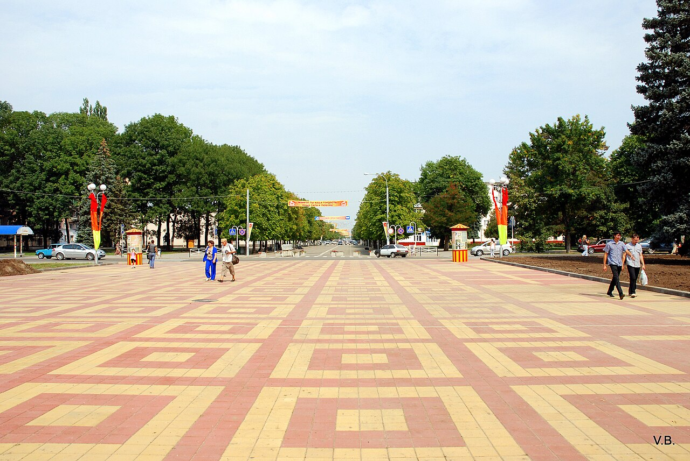

Национальный музей Адыгеи
Улица Советская, 229
У главного входа удобно встретиться перед прогулкой. В собрании музея есть археологические находки, адыгские украшения и предметы быта. Если решите зайти внутрь, заложите время отдельно.
Шесть остановок в Майкопе. Выберите место, чтобы посмотреть, какие прогулки через него проходят.
Улица Советская, 229
У главного входа удобно встретиться перед прогулкой. В собрании музея есть археологические находки, адыгские украшения и предметы быта. Если решите зайти внутрь, заложите время отдельно.

Улица Пионерская, у улицы Лермонтова
Найдите монумент «Навеки с Россией» и оглядитесь: у сухого фонтана вокруг него выложен гранитный орнамент. Дальше можно пройти в сквер к мечети или продолжить путь к вокзалу.

Улица Пушкина, 181
Вход со стороны Пушкина легко найти по вывеске «Горпарк Майкоп» с яблоком. Отсюда можно пройти по аллеям в ту часть парка, которая обращена к реке.

Набережная у «Золотого яблока»
На прогулочной набережной между городским бассейном и плотиной ищите скульптуру «Золотое яблоко». Если часть набережной закрыта, можно завершить прогулку у открытого участка парка.

Привокзальная площадь, 1
Прогулка заканчивается перед зданием вокзала. С привокзальной площади удобно рассмотреть арочные окна и фасад по всей длине.
Схемы показывают порядок остановок. Длины округлены по пешеходной маршрутизации FOSSGIS на данных OpenStreetMap. Время рассчитано для темпа около 4 км/ч без остановок.


_Maykop_4.jpg){kind=link}